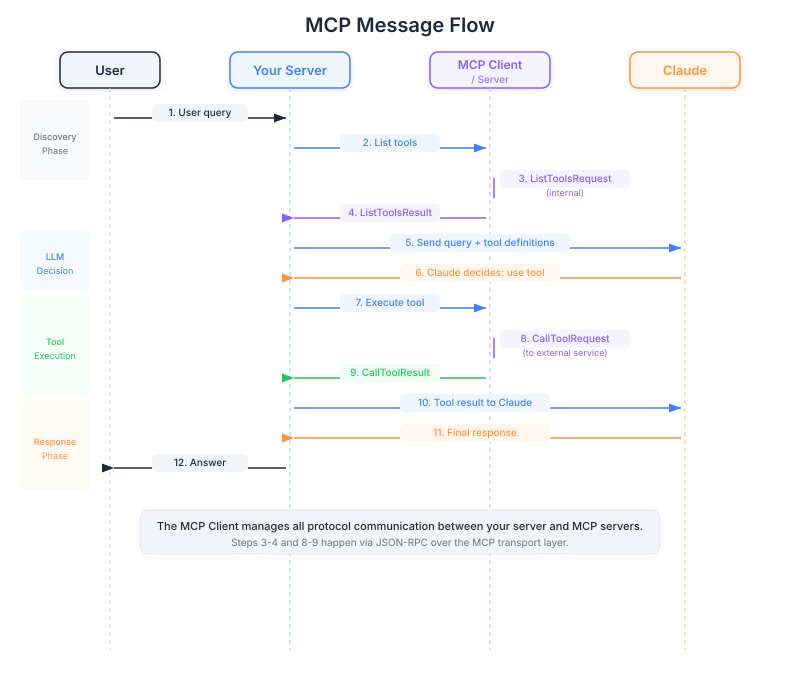

| Item | Detail |
|---|---|
| Exam Domain | D2 — Tool Design & MCP Integration (18%) |
| Task Statements | T2.2 Implement MCP client-server communication; T2.4 Handle tool discovery and execution flows |
| Source | introduction-to-model-context-protocol / 01-mcp-basics / Lesson 04 |
The MCP client is like a universal remote control inside your product that automatically discovers and operates any compatible smart device (MCP server) without needing device-specific programming.

Think of your AI product as a smart home hub. The MCP client is the universal remote control built into that hub. When you plug in a new smart device (an MCP server), the remote automatically:
The beauty is that this remote works with any compatible device regardless of the manufacturer. Whether it is a Philips light bulb or a Nest thermostat, the same remote handles both.
PM Takeaway
When scoping your product's integration capabilities, the MCP client is a one-time engineering investment. Once built, adding new service integrations becomes a configuration task rather than a development project.
MCP communication follows a simple two-step dance that mirrors how delegation works in any organization:
Before your product can use any service, the MCP client asks each MCP server: "What tools do you offer?" The server responds with a menu of capabilities.
This is like a new employee's first day — they sit down with each department head and ask: "What services does your team provide? What information do you need from me to get things done?"
When Claude decides a tool is needed, the MCP client sends a specific request: "Run this tool with these inputs." The server executes and returns results.
This is like sending a work request to that department: "Please pull the Q3 sales report for the APAC region." The department does the work and sends back the report.
PM Takeaway
The discovery-then-execution pattern means your product dynamically adapts to available services. If you add a new MCP server tomorrow, Claude automatically knows about its tools without any code changes to your core product.
Understanding the full flow helps PMs identify where bottlenecks, errors, or user experience issues might arise:
get_pull_requests existget_pull_requests is the right toolget_pull_requests with state=open"The two critical handoff points for product quality:
PM Takeaway
Each step in this flow is a potential point of failure or latency. When users report slow or incorrect responses, this flow gives you a framework to identify where the issue lives — is it tool discovery, Claude's decision-making, tool execution, or response generation?
The MCP client can talk to MCP servers through three channels. This is a deployment decision your engineering team will make:
stdio (Local) — Like having a colleague sitting right next to you. Fast, simple, but only works when everything is on the same machine. Good for development and testing.
HTTP (Remote) — Like communicating by email. Works across distances, reliable, but has some overhead per message. Good for production with remote services.
WebSockets (Persistent) — Like an open phone line. Always connected, instant back-and-forth, but requires maintaining the connection. Good for real-time, high-frequency interactions.
PM Takeaway
Transport choice affects latency, reliability, and infrastructure costs. For most production products, HTTP is the pragmatic default. Discuss with engineering if your use case needs the real-time benefits of WebSockets.
Key areas from Domain 2 (18%):
| Front | Back |
|---|---|
| What does the MCP client do in simple terms? | It discovers what tools are available from MCP servers and routes execution requests — like a universal remote that works with any compatible device. |
| What are the two phases of MCP communication? | Discovery (asking what tools exist) and Execution (calling a specific tool with specific inputs). |
| Why does the agentic flow require two calls to Claude? | First call: Claude receives the query and tool options, decides which tool to use. Second call: Claude receives the tool results and generates a final response. |
| What are the three transport options for MCP? | stdio (local, fast), HTTP (remote, reliable), and WebSockets (persistent, real-time). |
| How does MCP client affect time-to-integrate new services? | Once the client is built, adding new services becomes configuration (connecting to a new MCP server) rather than development (writing custom integration code). |
| What are the two critical handoff points in the 12-step flow? | Tool selection accuracy (depends on good tool descriptions) and response quality (depends on structured tool output). |
| What is "transport agnosticism" in business terms? | Your product can connect to MCP servers running locally, remotely, or via persistent connections — all using the same client code, reducing engineering overhead. |
| Where does the MCP client live in the product architecture? | Inside your application server, as a specific component that handles MCP protocol communication. It is not the entire application. |